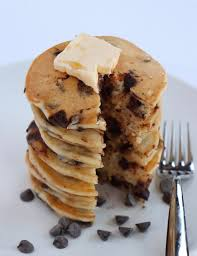

Chocolate Chip Pancakes

Description
Pancakes are probably the simplest food to make out of this entire list. It's a great food to start your morning and fill you up till dinner.
Ingredients:
- Pancake batter
- Water
- Butter
- Chocolate Chips
- Condiments (Honey, Chocolate, Fruit, etc)
Steps:
- Prepare your pancake batter by mixing your batter with water.
- Mix and keep on adding water or batter till you get a somewhat thick substance. (This'll be what you pour onto the pan to cook)
- Pour batter onto hot pan.
- As the pancake is heating up, drop some chocolate chips on top of the uncooked side of the pancake.
- Flip pancake when neecessary and once the pancake is done cooking, place it on a plate.
- Once you have the amount of pancakes you want, add condiments to your liking.
- For this recipe, you can add honey, drop some more chocolate chips, and top it off with some butter.
- Enjoy!